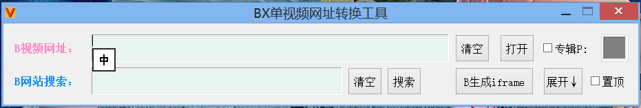
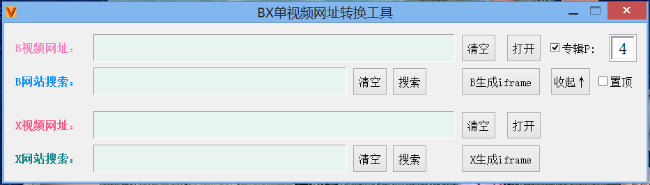

新动态：电玩街机[全新机台，对比旧版资源使用率更低，声音模拟更完善]已上线[浏览器跨平台游玩，支持电脑端、手机端、平板、电视盒子等平台设备...]支持自定义按键，支持手柄、键盘等外设输入！
站点公告：本站为非盈利性质个人站点，必然偶尔会发生无法访问的情况，介时还请多多理解，尽量第一时间恢复访问！
作者：感谢所有支持过本站的朋友们！愿天黑有灯，下雨有伞，平安幸福度一生！
无事阁原创软件_作者：不找事儿
★ 本站网址 ★ http://www.buzhaoshi.top/ ★ 或 ★ http://buzhaoshi.top/ ★
BX单视频网址转换工具(BX意为哔哩哔哩网站与西瓜视频网站)-最新版发布有记录功能错误已修复


简介：支持将哔哩哔哩网站与西瓜视频网站的正常视频网址转换成可以单个网页播放的单个视频链接，官方解析直连，非第三方接口解析
打开按钮：用默认浏览器打开转换后的链接并预览
清空按钮：清空左侧已输入的文本内容
置顶：将本窗口至于其他应用顶层
生成iframe：生成可屏蔽播放器内链接指向的网页嵌入代码
展开：在窗口内显示全部功能
哔哩哔哩视频支持：
1.单视频链接的转换(默认)
2.专辑选集链接的转换(选中专辑按钮后生效，默认为P1)
3.集成哔哩哔哩视频网站的搜索功能
4.生成iframe嵌入网页代码(可屏蔽播放器内指向哔哩哔哩网站的链接)
5.默认关掉弹幕+自动播放
西瓜视频的支持：
1.单视频链接的转换
2.集成西瓜视频网站的搜索功能
3.生成iframe嵌入网页代码(可屏蔽播放器内指向西瓜视频网站的链接)
【最新版有记录功能错误已修复】 [新]BX单视频网址转换工具_BX意为哔哩哔哩网站与西瓜视频网站,官方解析直连,非第三方
资源获取: bxtool.zip
更新说明：
1.修复了在生成iframe嵌入代码页面按钮显示位置错误的问题
2.更改生成的iframe宽度与高度100%为宽度702高度405
3.增加记录历史网址与专辑集数的功能
★ 本站网址 ★ http://www.buzhaoshi.top/ ★ 或 ★ http://buzhaoshi.top/ ★